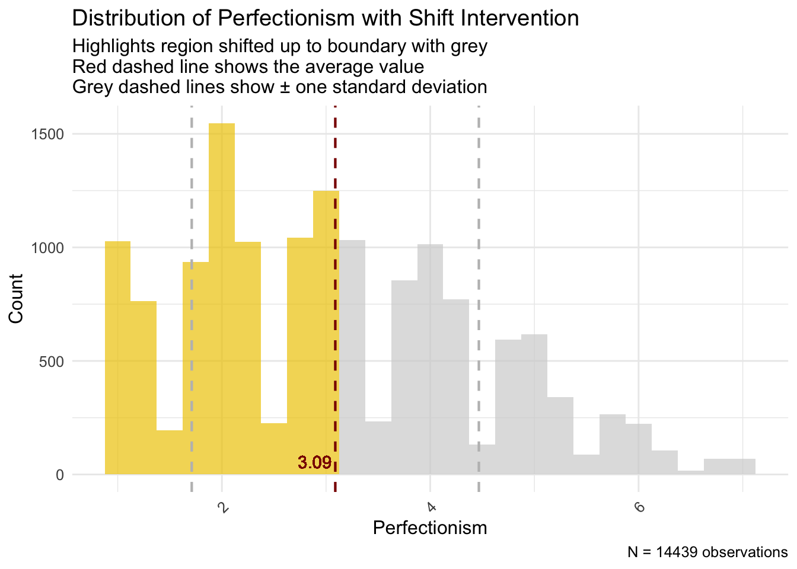
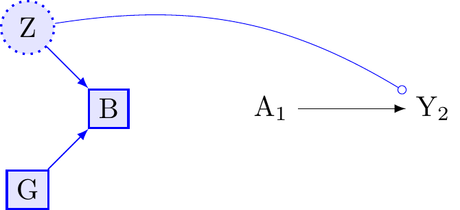
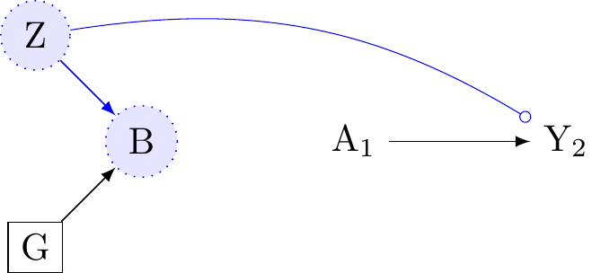

![]()
library("margot")
library("tidyverse")
library("ggplot2")
library("here")
library("skimr")
if (!require(gtsummary)) install.packages("gtsummary")
if (!require(janitor)) install.packages("janitor")
# if you need to update the margot package, uncomment and do this
# devtools::install_github("go-bayes/margot")
Note
———. 2007a. “Four types of effect modification: a classification based on directed acyclic graphs.” Epidemiology (Cambridge, Mass.) 18 (5): 561–68. https://doi.org/10.1097/EDE.0b013e318127181b.
Hernan, M. A., and J. M. Robins. 2020. Causal Inference: What If? Chapman & Hall/CRC Monographs on Statistics & Applied Probab. Taylor & Francis. https://www.hsph.harvard.edu/miguel-hernan/causal-inference-book/.
Key Concepts for Assessment
- Causal Estimand: The specific causal question we want to answer (e.g., the average effect in the whole population).
- Statistical Estimand: The calculation we perform on our data to try and answer the causal question.
- Interaction: The combined effect of two or more interventions.
- Effect Modification: When the effect of one intervention changes depending on a person’s characteristics.
- Heterogeneous Treatment Effects (HTE): The general idea that treatment effects vary across people.
- Conditional Average Treatment Effect (CATE) \tau(x): The average treatment effect for a specific subgroup defined by characteristics x.
- Estimated Conditional Average Treatment Effect \hat{\tau}(X): Our estimate (from data) of the average treatment effect for a subgroup with characteristics X.
If you learn nothing else from this course…
To answer psychological questions properly, we first need to state them very clearly. Causal inference gives us the tools to do this.
Causal inference asks: “What if?”
The core idea is to compare what actually happened with what could have happened under different conditions (these “what ifs” are called counterfactuals).
Imagine an outcome we care about, like student test scores (Y). We might compare the score if everyone got a new teaching method (let’s call this condition a^*) versus if everyone got the old method (condition a).
The difference in the potential outcome (Y) under these two scenarios is the causal effect for one person: Y(a^*) - Y(a).
Since we can’t see both scenarios for the same person, we often look at the average effect across a group. The Average Treatment Effect (ATE) is the average difference in potential outcomes across the whole population:
\text{ATE} = \mathbb{E}[Y(a^*) - Y(a)]
This asks: “On average, how much would scores change if we switched everyone from the old method (a) to the new method (a^*)?”.
A big challenge is dealing with confounders – other factors that mix up the relationship between the treatment (A) and the outcome (Y), potentially misleading us about the true causal effect. We need to account for these.
What do ‘Interaction’ and ‘Effect Modification’ mean in Causal Inference?
Words like ‘moderation’ and ‘interaction’ are often used loosely. Causal inference needs precise terms.
We’ll focus on two specific ideas:
- Interaction: About the effect of combining interventions.
- Effect Modification: About how the effect of one intervention changes for different types of people.
Interaction: The Effect of Teamwork (or Lack Thereof)
Interaction in causal inference is about joint interventions. We look at what happens when we apply two or more different treatments at the same time.
Let’s say we have two treatments, A and B, and an outcome Y.
- Y(\tilde{a}) is the potential outcome if we set treatment A to level \tilde{a}.
- Y(\tilde{b}) is the potential outcome if we set treatment B to level \tilde{b}.
- Y(\tilde{a}, \tilde{b}) is the potential outcome if we set A to \tilde{a} and B to \tilde{b} simultaneously.
To figure out these effects from observational data, we usually need assumptions like:
Consistency: The outcome we see for someone who got treatment \tilde{a} is the same as their potential outcome Y(\tilde{a}).
Conditional Exchangeability (No Unmeasured Confounding): We can make the groups receiving different treatments comparable by adjusting for measured confounders (L for A \to Y, and Q for B \to Y). The sets L and Q might overlap.
Positivity: the exposures to be compared occur in all subgroups.
To study the interaction between A and B, we need to be able to estimate the effect of A and the effect of B, which means we need to adjust for all confounders in both L and Q (i.e., their union L \cup Q).
Defining Interaction: Does 1 + 1 = 2?
Let’s use an education example:
- A: New teaching method (1=New, 0=Old)
- B: Extra tutoring (1=Yes, 0=No)
- Y: Test score
Is the boost in scores from getting both the new method and tutoring simply the sum of the boost from only the new method and the boost from only tutoring?
We define causal interaction on the additive scale (looking at differences) by comparing the effect of the joint intervention to the sum of the individual effects (all compared to getting neither):
\underbrace{(\mathbb{E}[Y(1,1)] - \mathbb{E}[Y(0,0)])}_{\text{Effect of Both}} \quad \text{vs} \quad \underbrace{(\mathbb{E}[Y(1,0)] - \mathbb{E}[Y(0,0)])}_{\text{Effect of A only}} + \underbrace{(\mathbb{E}[Y(0,1)] - \mathbb{E}[Y(0,0)])}_{\text{Effect of B only}}
Interaction exists if these are not equal. This simplifies to checking if the following is non-zero (see Appendix):
\underbrace{\mathbb{E}[Y(1,1)]}_{\text{Both}} - \underbrace{\mathbb{E}[Y(1,0)]}_{\text{A only}} - \underbrace{\mathbb{E}[Y(0,1)]}_{\text{B only}} + \underbrace{\mathbb{E}[Y(0,0)]}_{\text{Neither}} \neq 0
- If this is positive: Synergy (the combination is better than expected).
- If this is negative: Antagonism (the combination is worse than expected).
(We could also look at interaction on other scales, like ratios, which might give different answers. Always state the scale you’re using – we’ll come back to this in later lectures)
Finding Causal Interaction in Data
To estimate this interaction, we need valid estimates for all four average potential outcomes:
\mathbb{E}[Y(0,0)], \mathbb{E}[Y(1,0)], \mathbb{E}[Y(0,1)], \mathbb{E}[Y(1,1)]
This means we must control for confounders of both the A \to Y link and the B \to Y link.
Figure 1 shows this. L are confounders for A \to Y, and Q are confounders for B \to Y. We need to block the backdoor paths (red arrows).

Figure 2 shows we need to condition on (adjust for) both L_0 and Q_0.

In our education example:
L (Confounders for Teaching Method \to Score): Prior achievement, motivation, family background (SES), school quality, teacher differences (if not randomly assigned).
Q (Confounders for Tutoring \to Score): Prior achievement, motivation, family background (SES - paying for tutoring), student availability, specific learning needs.
Notice that prior achievement and motivation are in both L and Q. We need to measure and adjust for all important factors in L and Q to get a reliable estimate of the interaction.
Effect Modification: Different Effects for Different People
Unlike interaction (about combining treatments), effect modification is about whether the causal effect of a single intervention (A) on an outcome (Y) is different for different subgroups in the population. These subgroups are defined by baseline characteristics (like age, sex, prior history - let’s call these G or X).
Effect modification helps us understand who benefits most (or least) from an intervention. We explore this using ideas like Heterogeneous Treatment Effects (HTE) and Conditional Average Treatment Effects (CATE).
Heterogeneous Treatment Effects (HTE): The Idea of Variation
Heterogeneous Treatment Effects (HTE) just means that the effect of a treatment (A on Y) isn’t the same for everyone. The effect varies. This variation is effect modification.
Why does it vary?
- Differences in things we can measure (like age, sex, baseline health - our X variables).
- Differences in things we can’t easily measure (like genetics, unmeasured background factors).
HTE is the reality; treatments rarely work identically for all.
Conditional Average Treatment Effect (CATE): Measuring Variation with Data \tau(x)
To study HTE using data, we focus on the
Conditional Average Treatment Effect (CATE). CATE is a specific causal question (estimand): What is the average treatment effect for the subgroup of people who share specific measured characteristics X=x?
\tau(x) = \text{CATE}(x) = \mathbb{E}[Y(1) - Y(0) | X = x]
Here, Y(1) is the potential outcome with treatment, Y(0) without. \tau(x) tells us the average effect specifically for people with characteristics X=x. By looking at how \tau(x) changes for different x, we quantify effect modification by the characteristics we measured in X.
Comparing Effects Across Defined Groups
A simple way to check for effect modification by a category G (like comparing males vs females, or different locations) is to estimate the Average Treatment Effect (ATE) separately within each group. This is like comparing CATEs where X is just the group variable G.
Let’s say A is the treatment (0=control, 1=treated) and G is the potential modifier (e.g., g=female, g'=male).
We compare:
The average effect for females (G=g_1): \delta_{g_1} = \mathbb{E}[Y(1) | G=g_1] - \mathbb{E}[Y(0) | G=g_1]
The average effect for males (G=g_2): \delta_{g_2} = \mathbb{E}[Y(1) | G=g_2] - \mathbb{E}[Y(0) | G=g_2]
Effect modification by G exists if these are different: \gamma = \delta_{g_1} - \delta_{g_2} \neq 0.
If our estimate \hat{\gamma} is far from zero, it suggests the treatment effect differs between males and females.
Finding Effect Modification in Data
To estimate these group-specific effects (\delta_g) and their difference (\gamma) correctly, we need to control for confounders (L) of the A \to Y relationship within each group defined by G.
Note: we don’t necessarily need to control for things that cause G itself, unless they also confound the A \to Y relationship (i.e., are also in L).
Look at Figure 3. To estimate the A \to Y effect within levels of G, we need to adjust for the confounders L_0. But this will partially block the effect-modification of G on Y. Moreover, if we were identifying the causal effect of G on Y, after conditioning on L, we would find that a backdoor path opends from G to Y because L is a collider. We cannot interpret any coefficient for G in a regression model where L is in the model.

Thus it is essential to understand that when we control for confounding along the the A \to Y path, we do not identify the causal effects of effect-modifiers. Rather, we should consider effect-modifiers prognostic indicators. Moreover, we’re going to need to develop methods for clarifying prognostic indicators in multi-dimensional settings where
Estimating How Effects Vary: Getting \hat{\tau}(x) from Data
We defined the Conditional Average Treatment Effect (CATE), \tau(x), as the true average effect for a subgroup with specific features X=x:
\tau(x) = \mathbb{E}[Y(1) - Y(0) | X = x]
Now, we want to estimate this from our actual data. We call our estimate \hat{\tau}(x). For any person i in our study with features X_i, the value \hat{\tau}(X_i) is our data-based prediction of the average treatment effect for people like person i.
“Personalised” Effects vs. True Individual Effects
Wait - didn’t we say we can’t know the true effect for one specific person, Y_i(1) - Y_i(0)? Yes, that’s still true.
So what does \hat{\tau}(X_i) mean?
Individual Causal Effect (Unknowable): Y_i(1) - Y_i(0). This is the true effect for person i. We can’t observe both Y_i(1) and Y_i(0).
Estimated CATE (\hat{\tau}(X_i)) (What we calculate): This is our estimate of the average effect, \mathbb{E}[Y(1) - Y(0)], for the subgroup of people who share the same measured characteristics X_i as person i.
When people talk about “personalised” or “individualised” treatment effects in this context, they usually mean \hat{\tau}(x). It’s “personalised” because the prediction uses person i’s specific characteristics X_i = x. But remember, it’s an estimated average effect for a group, not the unique effect for that single individual.
People Have Many Characteristics
People aren’t just in one group; they have many features at once. A student might be:
- Female
- 21 years old
- From a low-income family
- Did well on previous tests
- Goes to a rural school
- Highly motivated
All these factors (X_i) together might influence how they respond to a new teaching method.
Trying to figure this out with traditional regression by manually adding interaction terms (like A*gender*age*income*...) becomes impossible very quickly:
- Too many combinations, not enough data in each specific combo.
- High risk of finding “effects” just by chance (false positives).
- Hard to know which interactions to even include.
- Can’t easily discover unexpected patterns.
Thus, while simple linear regression with interaction terms (lm(Y ~ A * X1 + A * X2)) can estimate CATEs if the model is simple and correct, it often fails when things get complex (many X variables, non-linear effects).
Causal forests (using the grf package in R) (Tibshirani et al. 2024) are a powerful, flexible alternative designed for this task. They build decision trees that specifically aim to find groups with different treatment effects.
Tibshirani, Julie, Susan Athey, Erik Sverdrup, and Stefan Wager. 2024. Grf: Generalized Random Forests. https://github.com/grf-labs/grf.
We’ll learn how to use grf after the mid-term break. It will allow us to get the \hat{\tau}(x) predictions and then think about how to use them, for instance, to prioritise who gets a treatment if resources are limited.
Summary
Let’s revisit the centeral ideas:
Interaction:
- Think: Teamwork effect.
- What: Effect of two or more different interventions (A and B) applied together.
- Question: Is the joint effect \mathbb{E}[Y(a,b)] different from the sum of individual effects?
- Needs: Control confounders for all interventions involved (L \cup Q).
Effect Modification / HTE / CATE:
- Think: Different effects for different groups.
- What: Effect of a single intervention (A) varies depending on people’s baseline characteristics (G or X).
- Question (HTE): Does the effect vary? (The phenomenon).
- Question (CATE \tau(x)): What is the average effect for a specific subgroup with features X=x? (The measure).
- Needs: Control confounders for the single intervention (L) within subgroups.
Estimated “Individualised” Treatment Effects (\hat{\tau}(x)):
- Think: Personal profile prediction.
- What: Our estimate of the average treatment effect for the subgroup of people sharing characteristics X_i.
- How: Calculated using models (like causal forests) that use the person’s full profile X_i.
- Important: This is not the true effect for that single person (which is unknowable). It’s an average for people like them.
- Use: Explore HTE, identify subgroups, potentially inform targeted treatment strategies.
Keeping these concepts distinct helps us ask clear research questions and choose the right methods.
Course Review So Far: A Quick Recap
Let’s quickly review the main ideas of causal inference we’ve covered.
The Big Question: Does A cause Y?
Causal inference helps us answer if something (like a teaching method, A) causes a change in something else (like test scores, Y).
Core Idea: “What If?” (Counterfactuals)
We compare what actually happened to what would have happened in a different scenario.
- Y(1): Score if the student had received the new method.
- Y(0): Score if the student had received the old method.
The Average Treatment Effect (ATE) = \mathbb{E}[Y(1) - Y(0)] is the average difference across the whole group.
This Lecture Clarified Concepts of Interaction vs. Effect Modification vs. Individual Predictions
Interaction (Think: Teamwork Effects)
- About: Combining two different interventions (A and B).
- Question: Does using both A and B together give a result different from just adding up their separate effects? (e.g., new teaching method + tutoring).
- Needs: Analyse effects of A alone, B alone, and A+B together. Control confounders for both A and B.
Effect Modification (Think: Different Effects for Different Groups)
- About: How the effect of one intervention (A) changes based on people’s characteristics (X, like prior grades).
- Question: Does the teaching method (A) work better for high-achieving students (X=high) than low-achieving students (X=low)?
- HTE: The idea that effects differ.
- CATE \tau(x): The average effect for the specific group with characteristics X=x.
- Needs: Analyse effect of A within different groups (levels of X). Control confounders for A.
Estimated Individualised Effects (\hat{\tau}(X_i)) (Think: Personal Profile Prediction)
- About: Using a person’s whole profile of characteristics (X_i - age, gender, background, etc.) to predict their likely response to treatment A.
- How: Modern methods (like causal forests) take all of X_i and estimate \hat{\tau}(X_i).
- Result: this \hat{\tau}(X_i) is not the true unknowable effect for person i. It is the estimated average effect for people similar to person i (sharing characteristics X_i).
- Use: helps explore if tailoring treatment based on these profiles (X_i) could be beneficial.
Simple Summary:
- Interaction: Do A and B work together well/badly?
- Effect Modification: Does A’s effect depend on who you are (based on X)?
- \hat{\tau}(X_i): Can we predict A’s average effect for someone based on their specific profile X_i?
Understanding these differences is key to doing good causal research!
Lab Part 1: Setting up your data
Set up your libraries
Set up a path to a folder in your directory
This will allow you to save the outputs of models and other information, which will be handy when you are producing your manuscript. Call this push_mods
### Set up a path to a folder in your directory
# create a folder called saved and make a path like this
push_mods <- here::here('/Users/joseph/v-project\ Dropbox/data/courses/25-psych-434')
# view it (will be different for you)
push_mods[1] "/Users/joseph/v-project Dropbox/data/courses/25-psych-434"# another option
# saveRDS(object, here::here(push_mods, "object"))Initial Data Wrangling to select the study sample
Where to find variable names information
Find it the data directory here: https://osf.io/75snb/
Also see here: https://github.com/go-bayes/templates/tree/main/method
Think, what are my eligibility criteria?
- Participated in at baseline
- Participated at treatment wave
- May have been lost to follow up at the end of the study
- Full information on the treatment variable (think about this…)
library(margot)
library(tidyverse)
library(table1)
library(gtsummary)
# eliminate haven labels
df_nz <- as.data.frame(df_nz)
df_nz <- haven::zap_formats(df_nz)
df_nz <- haven::zap_label(df_nz)
df_nz <- haven::zap_widths(df_nz)
# name output folder
push_mods <- here::here("outputs")
# set exposure name
name_exposure <- "perfectionism"
# obtain ids for individuals who participated in 2018 and have no missing baseline exposure
ids_2018 <- df_nz %>%
dplyr::filter(year_measured == 1, wave == 2018) %>%
dplyr::filter(!is.na(!!sym(name_exposure))) |> # criteria, no missing
pull(id)
# obtain ids for individuals who participated in 2019
ids_2019 <- df_nz %>%
dplyr::filter(year_measured == 1, wave == 2019) %>%
dplyr::filter(!is.na(!!sym(name_exposure))) |> # criteria, no missing
pull(id)
# intersect IDs from 2018 and 2019 to ensure participation in both years
ids_2018_2019 <- intersect(ids_2018, ids_2019)
# data wrangling
dat_long <- df_nz |>
dplyr::filter(id %in% ids_2018_2019 &
wave %in% c(2018, 2019, 2020)) |>
arrange(id, wave) |>
select(
"id",
"wave",
"year_measured",
"age",
"male",
"born_nz",
"eth_cat",
#factor(EthCat, labels = c("Euro", "Maori", "Pacific", "Asian")),
"employed",
# Are you currently employed? (this includes self-employment or casual work)
"edu",
# "gen_cohort",
"household_inc",
"partner",
# 0 = no, 1 = yes
"parent",
"alert_level_combined_lead", # see bibliography
# 0 = no, 1 = yes
"political_conservative", # see nzavs sheet
"hours_exercise", # see nzavs sheet
"agreeableness",
# Mini-IPIP6 Agreeableness (also modelled as empathy facet)
# Sympathize with others' feelings.
# Am not interested in other people's problems.
# Feel others' emotions.
# Am not really interested in others.
"conscientiousness",
# see mini ipip6
# Get chores done right away.
# Like order.
# Make a mess of things.
# Often forget to put things back in their proper place.
"extraversion",
# Mini-IPIP6 Extraversion
# Am the life of the party.
# Don't talk a lot.
# Keep in the background.
# Talk to a lot of different people at parties.
"honesty_humility",
# see mini ipip6
# Would like to be seen driving around in a very expensive car.
# Would get a lot of pleasure from owning expensive luxury goods.
# Feel entitled to more of everything.
# Deserve more things in life.
"openness",
# see mini ipip6
# Have a vivid imagination.
# Have difficulty understanding abstract ideas.
# Do not have a good imagination.
# Am not interested in abstract ideas.
"neuroticism",
# see mini ipip6
# Have frequent mood swings.
# Am relaxed most of the time.
# Get upset easily.
# Seldom feel blue.
"modesty",
# # see mini ipip6
# # I want people to know that I am an important person of high status,
# # I am an ordinary person who is no better than others.
# # I wouldn’t want people to treat me as though I were superior to them.
# # I think that I am entitled to more respect than the average person is
#"w_gend_age_ethnic",
"sample_weights", # see nzavs sheet
"neighbourhood_community",
# #I feel a sense of community with others in my local neighbourhood.
"belong", # see nzavs sheet
"rural_gch_2018_l",# see nzavs sheet
"support",
# "support_help",
# # 'There are people I can depend on to help me if I really need it.
# "support_turnto",
# # There is no one I can turn to for guidance in times of stress.
# "support_rnoguidance",
#There is no one I can turn to for guidance in times of stress.
"perfectionism",
"religion_religious",
"kessler_latent_depression",
"kessler_latent_anxiety"
) |>
mutate(
#initialize 'censored'
censored = ifelse(lead(year_measured) == 1, 1, 0),
# modify 'censored' based on the condition; no need to check for NA here as 'censored' is already defined in the previous step
censored = ifelse(is.na(censored) &
year_measured == 1, 1, censored)
) |>
select(-year_measured) |>
dplyr::mutate(
# rescale these variables, to get all variables on a similar scale
# otherwise your models can blow up, or become uninterpretable.
household_inc_log = log(household_inc + 1),
hours_exercise_log = log(hours_exercise + 1) ) |>
dplyr::select(
-c(
household_inc,
hours_exercise)
) |>
droplevels() |>
# dplyr::rename(sample_weights = w_gend_age_ethnic,
# sample_origin = sample_origin_names_combined) |>
arrange(id, wave) |>
mutate(
rural_gch_2018_l = as.numeric(as.character(rural_gch_2018_l)),
# parent = as.numeric(as.character(parent)),
partner = as.numeric(as.character(partner)),
born_nz = as.numeric(as.character(born_nz)),
censored = as.numeric(as.character(censored)),
employed = as.numeric(as.character(employed))
) |>
droplevels() |>
data.frame() |>
droplevels() |>
arrange(id, wave) |>
data.frame()
# check n in this sample
n_participants <- skimr::n_unique(dat_long$id)
# make number pretty
n_participants<- prettyNum(n_participants,big.mark=",")
# save this so that you can use it in your manuscript
margot::here_save(n_participants, "n_participants")Object saved to: /Users/joseph/GIT/psych-434-2025/outputs/n_participants.rds
Object size: 0.00 MB
👍 Save operation completed successfully!# try reading
n_participants_did_it_work_question_mark <- margot::here_read("n_participants")Object read from: /Users/joseph/GIT/psych-434-2025/outputs/n_participants.rds
Object size: 0.00 MB
👍 Read operation completed successfully!# view
# n_participants_did_it_work_question_markThere are N = 14,439 participants.
Define your baseline covariates, treatment (exposure), and outcome
# for example
baseline_vars = c("age", "male", "edu", "eth_cat", "partner", "employed", "born_nz", "neighbourhood_community", "household_inc_log",
"parent", "religion_religious", "rural_gch_2018_l","sample_weights", "employed", "alert_level_combined_lead")
# treatment
exposure_var = c("perfectionism", "censored") # we will use the censored variable later
# outcome, can be many
outcome_vars = c("kessler_latent_anxiety", "kessler_latent_depression")
# define waves
baseline_wave = "2018"
# exposure waves
exposure_waves = c("2018","2019")
#outcome wave
outcome_wave = "2020"
# exoposure
name_exposure = "perfectionism"Make your baseline table
Make tables
tables <- margot::margot_summary_tables(dat_long,
exposure_waves = exposure_waves,
baseline_wave = baseline_wave,
outcome_wave = outcome_wave,
name_exposure = name_exposure,
baseline_vars = baseline_vars,
outcome_vars = outcome_vars)
# save tables
# margot::here_save_qs(table_exposures, "table_exposures", push_mods)Baseline table
tables$baseline_table| Exposure + Demographic Variables | N = 14,4391 |
|---|---|
| Age | |
| Mean (SD) | 50 (14) |
| Min, Max | 18, 94 |
| Q1, Q3 | 41, 61 |
| Alert Level Combined Lead | |
| no_alert | 10,261 (71%) |
| early_covid | 1,617 (11%) |
| alert_level_1 | 1,272 (8.8%) |
| alert_level_2 | 366 (2.5%) |
| alert_level_2_5_3 | 253 (1.8%) |
| alert_level_4 | 670 (4.6%) |
| Born Nz | 11,398 (79%) |
| Unknown | 25 |
| Edu | |
| Mean (SD) | 5.38 (2.72) |
| Min, Max | 0.00, 10.00 |
| Q1, Q3 | 3.00, 7.00 |
| Unknown | 110 |
| Employed | 11,466 (80%) |
| Unknown | 22 |
| Eth Cat | |
| euro | 11,835 (83%) |
| maori | 1,526 (11%) |
| pacific | 314 (2.2%) |
| asian | 655 (4.6%) |
| Unknown | 109 |
| Household Inc log | |
| Mean (SD) | 11.41 (0.74) |
| Min, Max | 0.71, 14.40 |
| Q1, Q3 | 11.00, 11.92 |
| Unknown | 655 |
| Male | 5,238 (36%) |
| Neighbourhood Community | |
| Mean (SD) | 4.23 (1.66) |
| Min, Max | 1.00, 7.00 |
| Q1, Q3 | 2.99, 5.95 |
| Unknown | 73 |
| Parent | 10,350 (72%) |
| Unknown | 8 |
| Partner | 10,661 (76%) |
| Unknown | 399 |
| Religion Religious | 5,218 (36%) |
| Unknown | 19 |
| Rural Gch 2018 l | |
| 1 | 8,822 (62%) |
| 2 | 2,784 (19%) |
| 3 | 1,740 (12%) |
| 4 | 820 (5.7%) |
| 5 | 170 (1.2%) |
| Unknown | 103 |
| Sample Weights | |
| Mean (SD) | 0.94 (1.22) |
| Min, Max | 0.30, 19.96 |
| Q1, Q3 | 0.40, 1.03 |
| 1 n (%) | |
Exposure table
# tables$exposure_tablesOutcome table
tables$outcome_table| Outcome Variables by Wave | 2018 N = 14,4391 |
2020 N = 14,4391 |
|---|---|---|
| Kessler Latent Anxiety | 1.04 (0.65, 1.67) | 1.03 (0.65, 1.67) |
| Unknown | 148 | 2,893 |
| Kessler Latent Depression | 0.31 (0.01, 0.96) | 0.31 (0.01, 0.96) |
| Unknown | 152 | 2,890 |
| 1 Median (Q1, Q3) | ||
Inspect the distribution of the exposure in treatment wave
# select 2019 wave
dt_19 <- dat_long |> dplyr::filter(wave == 2019)
# mean
mean_exposure <-mean(dt_19$perfectionism, na.rm=TRUE)
# median
median_exposure <-median(dt_19$perfectionism, na.rm=TRUE)
# check if you like
# median_exposure
# mean_exposure
# generate bar plot
graph_density_of_exposure_up <- margot::margot_plot_shift(
dt_19,
shift = "up",
col_name = "perfectionism",
binwidth = .25,
range_highlight = c(0,mean_exposure)
)
# show
graph_density_of_exposure_up
# save
#margot::here_save(graph_density_of_exposure_up, "graph_density_of_exposure_up")Check for change in the treatment (Positivity)
# select data from wave 18 and 19
dt_18_19_positivity <- dat_long |>
dplyr::filter(wave == 2018 | wave == 2019) |>
dplyr::mutate(perfectionism_round = round(perfectionism, digits = 0)) |>
dplyr::select(perfectionism_round, id, wave) |>
droplevels()
out <-margot::margot_transition_table(data = dt_18_19_positivity, state_var = "perfectionism_round", id_var = "id", wave_var = "wave")
# table
out$tables[[1]]| From / To | State 1 | State 2 | State 3 | State 4 | State 5 | State 6 | State 7 | Total |
|---|---|---|---|---|---|---|---|---|
| State 1 | 893 | 484 | 194 | 40 | 16 | 3 | 2 | 1632 |
| State 2 | 657 | 1737 | 904 | 283 | 78 | 9 | 1 | 3669 |
| State 3 | 237 | 1073 | 1368 | 768 | 245 | 40 | 5 | 3736 |
| State 4 | 66 | 335 | 803 | 1076 | 523 | 108 | 10 | 2921 |
| State 5 | 24 | 77 | 253 | 531 | 579 | 223 | 26 | 1713 |
| State 6 | 7 | 9 | 38 | 106 | 205 | 216 | 53 | 634 |
| State 7 | 2 | 1 | 5 | 8 | 25 | 45 | 48 | 134 |
# for import later
# margot::here_save(transition_table, "transition_table")Explanation for the table
cat(out$explanation)These transition matrices capture shifts in states between consecutive waves. Each cell represents the count of individuals transitioning from one state to another. The rows correspond to the initial state (From), and the columns correspond to the subsequent state (To). **Diagonal entries** (in **bold**) correspond to individuals who remained in the same state. **Off-diagonal entries** correspond to individuals who transitioned to a different state.
A higher number on the diagonal relative to off-diagonal entries indicates greater stability in a state. Conversely, higher off-diagonal numbers suggest more frequent shifts between states.Lab Part 2: Simulation to Clarify Why The Distribution of Effect Modifiers Matter For Estimating Treatment Effects
First, we load the stdReg library, which obtains marginal effect estimates by simulating counterfactuals under different levels of treatment (Sjölander 2016). If a treatment is continuous, the levels can be specified.
Sjölander, Arvid. 2016. “Regression Standardization with the R Package stdReg.” European Journal of Epidemiology 31 (6): 563–74. https://doi.org/10.1007/s10654-016-0157-3.
Lüdecke, Daniel, Mattan S. Ben-Shachar, Indrajeet Patil, and Dominique Makowski. 2020. “Extracting, Computing and Exploring the Parameters of Statistical Models Using R.” Journal of Open Source Software 5 (53): 2445. https://doi.org/10.21105/joss.02445.
We also load the parameters library, which creates nice tables (Lüdecke et al. 2020).
# to obtain marginal effects
library(stdReg)
# to create nice tables
library(parameters)Next, we write a function to simulate data for the sample and and target populations.
We assume the treatment effect is the same in the sample and target population. We will assume that the coefficient for the effect-modifier and the coefficient for interaction are the same. We assume no unmeasured confounding throughout the study. We assume only selective attrition of one effect modifier such that the baseline population differs from the sample population at the end of the study.
That is: the distribution of effect modifiers is the only respect in which the sample will differ from the target population.
This function will generate data under a range of scenarios.1
1 See documentation in the margot package: Bulbulia (2024)
Bulbulia, J. A. 2024. Margot: MARGinal Observational Treatment-Effects. https://doi.org/10.5281/zenodo.10907724.
# function to generate data for the sample and population,
# along with precise sample weights for the population, there are differences
# in the distribution of the true effect modifier but no differences in the treatment effect
# or the effect modification.all that differs between the sample and the population is
# the distribution of effect-modifiers.
# reproducability
set.seed(123)
# simulate the data -- you can use different parameters
data <- margot::simulate_ate_data_with_weights(
n_sample = 10000,
n_population = 100000,
p_z_sample = 0.1,
p_z_population = 0.5,
beta_a = 1,
beta_z = 2.5,
noise_sd = 0.5
)
# view
str(data)List of 2
$ sample_data :'data.frame': 10000 obs. of 4 variables:
..$ y_sample: num [1:10000] 1.1854 -0.0834 1.4635 -0.2841 2.6125 ...
..$ a_sample: int [1:10000] 0 0 1 0 0 0 1 1 1 0 ...
..$ z_sample: int [1:10000] 0 0 0 0 1 0 0 0 0 0 ...
..$ weights : num [1:10000] 0.556 0.556 0.556 0.556 5 ...
$ population_data:'data.frame': 100000 obs. of 3 variables:
..$ y_population: num [1:100000] 0.331 1.982 -0.446 1.117 0.916 ...
..$ a_population: int [1:100000] 1 0 0 1 1 0 0 1 0 0 ...
..$ z_population: int [1:100000] 0 1 0 0 0 0 0 0 0 0 ...Ok, we have generated both sample and population data.
Next, we verify that the distributions of effect modifiers differ in the sample and in the target population:
# obtain the generated data
sample_data <- data$sample_data
population_data <- data$population_data
# check imbalance
table(sample_data$z_sample) # type 1 is rare
0 1
9055 945 table(population_data$z_population) # type 1 is common
0 1
49916 50084 Good, the distributions differ. The simulation is working as intended.
Next, consider the question: “What are the differences in the coefficients that we obtain from the study population at the end of study, as compared with the target population?”
First, we obtain the coefficients for the sample. They are as follows:
# model coefficients sample
model_sample <-
glm(y_sample ~ a_sample * z_sample, data = sample_data)
# summary
parameters::model_parameters(model_sample, ci_method = "wald")Parameter | Coefficient | SE | 95% CI | t(9996) | p
-------------------------------------------------------------------------------
(Intercept) | -6.89e-03 | 7.38e-03 | [-0.02, 0.01] | -0.93 | 0.350
a sample | 1.01 | 0.01 | [ 0.99, 1.03] | 95.84 | < .001
z sample | 2.47 | 0.02 | [ 2.43, 2.52] | 104.09 | < .001
a sample × z sample | 0.51 | 0.03 | [ 0.44, 0.57] | 14.82 | < .001Ok, let’s obtain the coefficients for the weighted regression of the sample. Notice that the coefficients are virtually the same:
# model the sample weighted to the population, again note that these coefficients are similar
model_weighted_sample <-
glm(y_sample ~ a_sample * z_sample,
data = sample_data,
weights = weights)
# summary
summary(parameters::model_parameters(model_weighted_sample, ci_method =
"wald"))Parameter | Coefficient | 95% CI | p
----------------------------------------------------------
(Intercept) | -6.89e-03 | [-0.03, 0.01] | 0.480
a sample | 1.01 | [ 0.98, 1.04] | < .001
z sample | 2.47 | [ 2.45, 2.50] | < .001
a sample × z sample | 0.51 | [ 0.47, 0.55] | < .001
Model: y_sample ~ a_sample * z_sample (10000 Observations)
Sigma: 0.494 (df = 9996)We might be tempted to infer that weighting wasn’t relevant to the analysis. However, we’ll see that such an interpretation would be a mistake.
Next, let us obtain model coefficients for the population. Note again there is no difference – only narrower errors owing to the large sample size.
# model coefficients population -- note that these coefficients are very similar.
model_population <-
glm(y_population ~ a_population * z_population, data = population_data)
parameters::model_parameters(model_population, ci_method = "wald")Parameter | Coefficient | SE | 95% CI | t(99996) | p
----------------------------------------------------------------------------------------
(Intercept) | 2.49e-03 | 3.18e-03 | [ 0.00, 0.01] | 0.78 | 0.434
a population | 1.00 | 4.49e-03 | [ 0.99, 1.01] | 222.35 | < .001
z population | 2.50 | 4.49e-03 | [ 2.49, 2.51] | 556.80 | < .001
a population × z population | 0.50 | 6.35e-03 | [ 0.49, 0.51] | 78.80 | < .001Again, there is no difference. That is, we find that all model coefficients are practically equivalent. The different distribution of effect modifiers does not result in different coefficient values for the treatment effect, the effect-modifier “effect,” or the interaction of effect modifier and treatment.
Consider why this is the case: in a large sample where the causal effects are invariant – as we have simulated them to be – we will have good replication in the effect modifiers within the sample, so our statistical model can recover the coefficients for the population – no problem.
However, in causal inference, we are interested in obtaining the marginal effect of the treatment. That is, we seek an estimate for the counterfactual contrast in which everyone in a pre-specified population was subject to one level of treatment compared with a counterfactual condition in which everyone in a population was subject to another level of the same treatment. When the sample population differs in the distribution of effect modifiers from the target population effect, the marginal effect estimates will typically differ.
To see this, we use the stdReg package to recover marginal effect estimates, comparing (1) the sample ATE, (2) the true oracle ATE for the population, and (3) the weighted sample ATE. We will use the outputs of the same models above. The only difference is that we will calculate marginal effects from these outputs. We will contrast a difference from an intervention in which everyone receives treatment = 0 with one in which everyone receives treatment = 1, however, this choice is arbitrary, and the general lessons apply irrespective of the estimand.
First, consider this ATE for the sample population.
# What inference do we draw? We cannot say the models are unbiased for the marginal effect estimates.
# regression standardisation
library(stdReg) # to obtain marginal effects
# obtain sample ate
fit_std_sample <-
stdReg::stdGlm(model_sample, data = sample_data, X = "a_sample")
# summary
summary(fit_std_sample,
contrast = "difference",
reference = 0)
Formula: y_sample ~ a_sample * z_sample
Family: gaussian
Link function: identity
Exposure: a_sample
Reference level: a_sample = 0
Contrast: difference
Estimate Std. Error lower 0.95 upper 0.95
0 0.00 0.0000 0.00 0.00
1 1.06 0.0101 1.04 1.08The treatment effect is given as a 1.06 unit change in the outcome across the sample population, with a confidence interval from 1.04 to 1.08.
Next, we obtain the true (oracle) treatment effect for the population under the same intervention.
## note the population effect is different
#obtain true ate
fit_std_population <-
stdReg::stdGlm(model_population, data = population_data, X = "a_population")
# summary
summary(fit_std_population,
contrast = "difference",
reference = 0)
Formula: y_population ~ a_population * z_population
Family: gaussian
Link function: identity
Exposure: a_population
Reference level: a_population = 0
Contrast: difference
Estimate Std. Error lower 0.95 upper 0.95
0 0.00 0.00000 0.00 0.00
1 1.25 0.00327 1.24 1.26Note, the true treatment effect is a 1.25 unit change in the population, with a confidence bound between 1.24 and 1.26. This is well outside the ATE that we obtain from the sample population!
Next, consider the ATE in the weighted regression, where the sample was weighted to the target population’s true distribution of effect modifiers.
## next try weights adjusted ate where we correctly assign population weights to the sample
fit_std_weighted_sample_weights <- stdReg::stdGlm( model_weighted_sample,
data = sample_data,
X = "a_sample")
# this gives us the right answer
summary(fit_std_weighted_sample_weights,
contrast = "difference",
reference = 0)
Formula: y_sample ~ a_sample * z_sample
Family: gaussian
Link function: identity
Exposure: a_sample
Reference level: a_sample = 0
Contrast: difference
Estimate Std. Error lower 0.95 upper 0.95
0 0.00 0.0000 0.00 0.00
1 1.25 0.0172 1.22 1.29# moral of the story. when we marginalise over the entire sample we need to weight estimates to the target population. We find that we obtain the population-level causal effect estimate with accurate coverage by weighting the sample to the target population. So with appropriate weights, our results generalise from the sample to the target population.
Lessons from Lab 2
- Regression coefficients do not clarify the problem of sample/target population mismatch – or selection bias as discussed in this manuscript.
- The correct advice to investigators is that they should not rely on regression coefficients when evaluating the biases that arise from sample attrition. This advice applies to both methods that the authors use to investigate threats of bias. That is, to implement this advice, the authors must first take it.
- Generally, observed data are insufficient for assessing threats. Observed data do not clarify structural sources of bias, nor do they clarify effect-modification in the full counterfactual data condition in which all receive the treatment and all do not receive the treatment (at the same level).
- To properly assess bias, one would need access to the counterfactual outcome—what would have happened to the missing participants had they not been lost to follow-up or had they responded. Again, the join distributions over “full data” are inherently unobservable (Van Der Laan and Rose 2011).
- In simple settings like the one we just simulated, we may address the gap between the sample and target population using methods such as modelling the censoring (e.g., censoring weighting). However, we never know what setting we are in or whether it is simple—such modelling must be handled with care. There is a large and growing epidemiology literature on this topic (see, for example, Li, Miao, and Tchetgen Tchetgen (2023)).
Van Der Laan, Mark J., and Sherri Rose. 2011. Targeted Learning: Causal Inference for Observational and Experimental Data. Springer Series in Statistics. New York, NY: Springer. https://link.springer.com/10.1007/978-1-4419-9782-1.
Li, Wei, Wang Miao, and Eric Tchetgen Tchetgen. 2023. “Non-Parametric Inference about Mean Functionals of Non-Ignorable Non-Response Data Without Identifying the Joint Distribution.” Journal of the Royal Statistical Society Series B: Statistical Methodology 85 (3): 913–35.
Appendix A: Simplification of Additive Interaction Formula
We start with the definition of additive interaction based on comparing the joint effect relative to baseline versus the sum of individual effects relative to baseline:
\Big(\mathbb{E}[Y(1,1)] - \mathbb{E}[Y(0,0)]\Big) - \Big[\Big(\mathbb{E}[Y(1,0)] - \mathbb{E}[Y(0,0)]\Big) + \Big(\mathbb{E}[Y(0,1)] - \mathbb{E}[Y(0,0)]\Big)\Big]
First, distribute the negative sign across the terms within the square brackets:
\mathbb{E}[Y(1,1)] - \mathbb{E}[Y(0,0)] - \Big(\mathbb{E}[Y(1,0)] - \mathbb{E}[Y(0,0)]\Big) - \Big(\mathbb{E}[Y(0,1)] - \mathbb{E}[Y(0,0)]\Big)
Now remove the parentheses, flipping the signs inside them where preceded by a minus sign:
\mathbb{E}[Y(1,1)] - \mathbb{E}[Y(0,0)] - \mathbb{E}[Y(1,0)] + \mathbb{E}[Y(0,0)] - \mathbb{E}[Y(0,1)] + \mathbb{E}[Y(0,0)]
Next, combine the \mathbb{E}[Y(0,0)] terms:
- We have -\mathbb{E}[Y(0,0)]
- Then +\mathbb{E}[Y(0,0)] (these two cancel each other out)
- And another +\mathbb{E}[Y(0,0)] remains.
The expression simplifies to:
\mathbb{E}[Y(1,1)] - \mathbb{E}[Y(1,0)] - \mathbb{E}[Y(0,1)] + \mathbb{E}[Y(0,0)]
This is the standard definition of additive interaction, often called the interaction contrast. If this expression equals zero, there is no additive interaction; a non-zero value indicates an interaction effect.
This shows clearly that interaction is measured as the deviation of the joint effect from the sum of the separate effects, adjusted for the baseline.
Appendix B
Evidence for effect-modification is relative to inclusion of other variables in the model
The ‘sharp-null hypothesis’ states there is no effect of the exposure on the outcome for any unit in the target population. Unless the ‘sharp-null hypothesis’ is false, there may be effect-modification. For any study worth conducting, we cannot evaluate whether the sharp-null hypothesis is false. If we could the experiment would be otiose. Therefore, we must assume the possibility of effect-modification. Notably, whether a variable is an effect-modifier also depends on which other variables are included in the model. That is, just as for the concept of a ‘confounder’, where a variable is an ‘effect-modifier’ cannot be stated without reference to an assumed causal order and an explicit statement about which other variables will be included in the model (Tyler J. VanderWeele 2012).
VanderWeele, Tyler J. 2012. “Confounding and Effect Modification: Distribution and Measure.” Epidemiologic Methods 1 (1): 55–82. https://doi.org/10.1515/2161-962X.1004.
As illustrated in Figure 4, the marginal association between A and Y is unbiased. Here, exposure A is unconditionally associated with Y. Recall our convention denotes effect-modification with conditioning and indicates effect-modification without conditioning.

Figure 5 presents the same a randomised experiment as in the previous causal diagram. We again assume that there is no confounding of the marginal association between the exposure, A, and the outcome, Y. However, suppose we were to adjust for Z and ask, does the conditional association of A on Y vary within levels of G, after adjusting for Z? That is, does G remain an effect-modifier of the exposure on the outcome? Tyler J. VanderWeele and Robins (2007b) proved that for effect-modification to occur, at least one other arrow besides the treatment must enter into the outcome. According to Figure 5 the only arrow into Y other than A arrives from Z. Because Y is independent of G conditional on Z we may infer that G is no longer an effect modifier for the effect of A on Y. Viewed another way, G no longer co-varies with Y conditional on Z and so cannot act as an effect-modifier.

Figure 6 presents the same a randomised experiment as in the previous graph. We assume a true effect of A \rightarrow Y. If we do not condition on B, then G will not modify the effect of A \rightarrow Y because G will not be associated with Y. However, if we were to condition on B, then both B (an effect modifier by proxy) and G may become effect-modifiers for the causal effect of A on Y. In this setting, both B and G are conditional effect-modifiers.
Note that casual graphs help us to evaluate classifications of conditional and unconditional effect modifiers. They may also help to clarify conditions in which conditioning on unconditional effect-modifiers may remove conditional effect-modification. However we cannot not tell from a causal diagram whether the ancestors of an unconditional effect-modifier will be conditional effect-modifiers for the effect of the exposure on the outcome; see: Tyler J. VanderWeele and Robins (2007b), also Suzuki et al. (2013). Causal diagrams express non-parametric relations. I have adopted an off-label colouring convention to denote instances of effect-modification to highlight possible pathways for effect-modification, which may be relative to other variables in a model.
VanderWeele, Tyler J., and James M. Robins. 2007b. “Four types of effect modification: a classification based on directed acyclic graphs.” Epidemiology (Cambridge, Mass.) 18 (5): 561–68. https://doi.org/10.1097/EDE.0b013e318127181b.

Figure 7 reveals the relativity of effect-modification. If investigators do not condition on B, then G cannot be a conditional effect-modifier because G would then be independent of Z because B is a collider. However, as we observed in Figure 6, conditioning on B, a collider, may open a path for effect-modification of G by Z. Both B and G are conditional effect modifiers.


Figure 8 considers the implications of conditioning on Z, which is the only unconditional effect-modifier on the graph. If Z is measured, conditioning on Z will remove effect-modification for B and G because B,G\coprod Y |Z. This examples again reveals the context dependency of effect-modification. Here, causal diagrams are useful for clarifying features of dependent and independent effect modification. For further discussion, see: Suzuki et al. (2013); Tyler J. VanderWeele (2009).
Suzuki, Etsuji, Toshiharu Mitsuhashi, Toshihide Tsuda, and Eiji Yamamoto. 2013. “A Counterfactual Approach to Bias and Effect Modification in Terms of Response Types.” BMC Medical Research Methodology 13 (1): 1–17.
VanderWeele, Tyler J. 2009. “On the Distinction Between Interaction and Effect Modification.” Epidemiology, 863–71.
Packages
report::cite_packages() - Bulbulia J (2024). _margot: MARGinal Observational Treatment-effects_. doi:10.5281/zenodo.10907724 <https://doi.org/10.5281/zenodo.10907724>, R package version 0.3.3.3 Functions to obtain MARGinal Observational Treatment-effects from observational data., <https://go-bayes.github.io/margot/>.
- Firke S (2024). _janitor: Simple Tools for Examining and Cleaning Dirty Data_. R package version 2.2.1, <https://CRAN.R-project.org/package=janitor>.
- Grolemund G, Wickham H (2011). "Dates and Times Made Easy with lubridate." _Journal of Statistical Software_, *40*(3), 1-25. <https://www.jstatsoft.org/v40/i03/>.
- Lüdecke D, Ben-Shachar M, Patil I, Makowski D (2020). "Extracting, Computing and Exploring the Parameters of Statistical Models using R." _Journal of Open Source Software_, *5*(53), 2445. doi:10.21105/joss.02445 <https://doi.org/10.21105/joss.02445>.
- Müller K (2020). _here: A Simpler Way to Find Your Files_. R package version 1.0.1, <https://CRAN.R-project.org/package=here>.
- Müller K, Wickham H (2023). _tibble: Simple Data Frames_. R package version 3.2.1, <https://CRAN.R-project.org/package=tibble>.
- R Core Team (2025). _R: A Language and Environment for Statistical Computing_. R Foundation for Statistical Computing, Vienna, Austria. <https://www.R-project.org/>.
- Rich B (2023). _table1: Tables of Descriptive Statistics in HTML_. R package version 1.4.3, <https://CRAN.R-project.org/package=table1>.
- Sjoberg D, Whiting K, Curry M, Lavery J, Larmarange J (2021). "Reproducible Summary Tables with the gtsummary Package." _The R Journal_, *13*, 570-580. doi:10.32614/RJ-2021-053 <https://doi.org/10.32614/RJ-2021-053>, <https://doi.org/10.32614/RJ-2021-053>.
- Sjolander A, Dahlqwist E (2021). _stdReg: Regression Standardization_. R package version 3.4.1, <https://CRAN.R-project.org/package=stdReg>.
- Waring E, Quinn M, McNamara A, Arino de la Rubia E, Zhu H, Ellis S (2022). _skimr: Compact and Flexible Summaries of Data_. R package version 2.1.5, <https://CRAN.R-project.org/package=skimr>.
- Wickham H (2016). _ggplot2: Elegant Graphics for Data Analysis_. Springer-Verlag New York. ISBN 978-3-319-24277-4, <https://ggplot2.tidyverse.org>.
- Wickham H (2023). _forcats: Tools for Working with Categorical Variables (Factors)_. R package version 1.0.0, <https://CRAN.R-project.org/package=forcats>.
- Wickham H (2023). _stringr: Simple, Consistent Wrappers for Common String Operations_. R package version 1.5.1, <https://CRAN.R-project.org/package=stringr>.
- Wickham H, Averick M, Bryan J, Chang W, McGowan LD, François R, Grolemund G, Hayes A, Henry L, Hester J, Kuhn M, Pedersen TL, Miller E, Bache SM, Müller K, Ooms J, Robinson D, Seidel DP, Spinu V, Takahashi K, Vaughan D, Wilke C, Woo K, Yutani H (2019). "Welcome to the tidyverse." _Journal of Open Source Software_, *4*(43), 1686. doi:10.21105/joss.01686 <https://doi.org/10.21105/joss.01686>.
- Wickham H, François R, Henry L, Müller K, Vaughan D (2023). _dplyr: A Grammar of Data Manipulation_. R package version 1.1.4, <https://CRAN.R-project.org/package=dplyr>.
- Wickham H, Henry L (2025). _purrr: Functional Programming Tools_. R package version 1.0.4, <https://CRAN.R-project.org/package=purrr>.
- Wickham H, Hester J, Bryan J (2024). _readr: Read Rectangular Text Data_. R package version 2.1.5, <https://CRAN.R-project.org/package=readr>.
- Wickham H, Vaughan D, Girlich M (2024). _tidyr: Tidy Messy Data_. R package version 1.3.1, <https://CRAN.R-project.org/package=tidyr>.